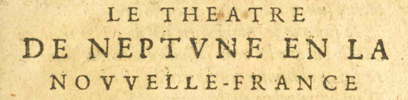
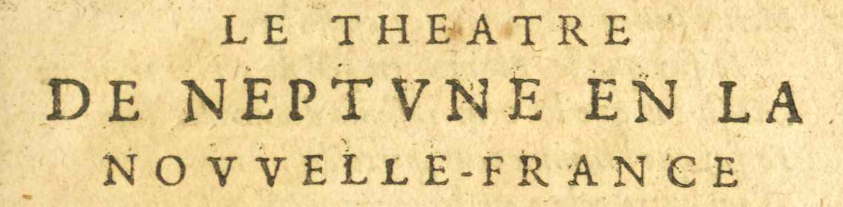

1/11
 
LE THEATRE

LE THEATRE
DE NEPTVUNE EN LA
NOVUVELLE-FRANCE.
Repreſsenté La pièce théâtrale fut écrite afin de célébrer le retour de Jean de Poutrincourt et
de Samuel de Champlain d'une expédition vers le cap Cod. ſsur les flots du Port Royal
La pièce théâtrale fut écrite afin de célébrer le retour de Jean de Poutrincourt et
de Samuel de Champlain d'une expédition vers le cap Cod. ſsur les flots du Port Royal Habitation coloniale fondée en 1605 en Acadie. le quator-
Habitation coloniale fondée en 1605 en Acadie. le quator-
ziémeE11 : zième Novembre mille ſsix cens ſsix, au retour
du sieurE17 E18 : Sieur de Poutrincourt Fondateur de la colonie de Port-Royal en Nouvelle-France. du païs des Armou-
Fondateur de la colonie de Port-Royal en Nouvelle-France. du païs des Armou-
chiquois Région de la Nouvelle-Angleterre située au Sud de la rivière Saco et au Nord du cap
Cod..
Région de la Nouvelle-Angleterre située au Sud de la rivière Saco et au Nord du cap
Cod..
Neptune Dieu d'origine latine des eaux vives et des sources, puis des mers. commence revetuE17 E18 : revétu d'vun voile de couleur
Dieu d'origine latine des eaux vives et des sources, puis des mers. commence revetuE17 E18 : revétu d'vun voile de couleur
bleuë, & de brodequins, ayant la chevelure & la barbe
longues & chenuës, tenant ſson Trident en main,
aſsſsis ſsur ſson chariot paré de ſses couleurs : ledit cha-
riot trainé ſsur les ondes par ſsix Tritons Figures mythologiques de la mer. juſsques à
Figures mythologiques de la mer. juſsques à
l'abord de la chaloupe où s'eſstoit mis ledit Sieur de
PoutrincourtFondateur de la colonie de Port-Royal en Nouvelle-France. & ſses gens ſsortant de la barque pour
venir à terre. Lors ladite chaloupe accrochée, Ne-
ptune commence ainſsi.
NEPTVUNE.
- ARRETE, Sagamos, *
* C'eſst vun
mot de
Sauvage Désignation de ceux habitant dans la nature, c'est-à-dire loin de la civilisation.,
Désignation de ceux habitant dans la nature, c'est-à-dire loin de la civilisation.,
qui ſsigni-
fie Capi-
taine. arréte toy ici, - Et regardesE09 E12 : écoutes vun Dieu qui a de toy ſsouci.
- Si tu ne me conois, Saturne
 Dieu romain du ciel présidant le solstice d'hiver. fut mon pere,
Dieu romain du ciel présidant le solstice d'hiver. fut mon pere, - IJe ſsuis de IupiterJupiter
 Dieu romain qui gouverne la terre et le ciel, ainsi que tous les êtres vivants s'y
trouvant. & de Pluton
Dieu romain qui gouverne la terre et le ciel, ainsi que tous les êtres vivants s'y
trouvant. & de Pluton Dieu romain des morts. le frere.
Dieu romain des morts. le frere.